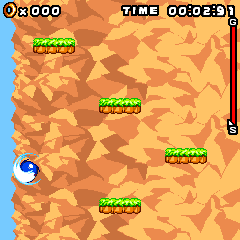

I did Sonic Jump because my brother likes Sonic. That part was simple. Figuring out how this game drew its screen was less obvious: its paint callback was empty on purpose.SJ00SJ01
An empty paint(). A complete frame.
This was a two-class DoJa game with a square 240×240 playfield. Instead of drawing in the callback the host might expect, it owned its graphics object, locked it, drew the scene and called unlock(true). That last call was the point where the completed picture needed to reach Android. Asking the canvas to repaint could not supply work the callback never did.SJ01

An unchanged 240×240 game frame from the retained JVM guest probe. It records original-game rendering on the host, not a phone screenshot.
Open the image for the full original view.
SJ90Waiting at full speed.
The original loop wanted one update every 100 milliseconds. While waiting, it repeatedly checked the clock without sleeping. The game thread stayed busy during the time between updates.SJ03
We changed the clock call at one specific bytecode location into a bounded wait, keeping method lengths, branches and the intended update interval. The other elapsed-time calls used the same pause-aware clock, so backgrounding the app stopped adding invisible time to the game.SJ03SJ04
That meant making a small patch to the executed guest. We kept the preserved original and the adapted timing behavior separately in the record, so this part of the recovery stays visible too.SJ04
A twenty-millisecond tap.
Input had to live on that same clock. A touch could begin and end in twenty milliseconds, entirely between the game’s hundred-millisecond polls. The retained input checks made that short press visible to a normal update rather than inventing an extra update whenever a finger touched the glass.SJ06
The button meanings were specific too. Left and right steer. SELECT or 5 performs the high jump, with a latch that prevents a held button from retriggering forever. During pause, however, SELECT is not Resume. The original first softkey resumes; its meaning changes with the screen. The bridge followed the game’s own soft labels.SJ02
The scratchpad added one last practical wrinkle. Its stored file carried a 64-byte emulator header ahead of the logical game data. The prepared local data also retained the final logical sentinel used to avoid a dead download path. Both details mattered to making the preserved game start from useful local state.SJ05SJ08
The retained probe has Sonic moving and jumping through his own platforms. To get that simple-looking scene, we had to understand where he drew, how he waited and which keys he expected. A Sonic game for my brother had brought us another small set of very specific phone habits.SJ06
About these records
The brother motivation is current recollection. The “port of a port” teasing in the same message is not assigned specifically to Sonic Jump because the owner also mentioned another Sonic recovery. This chapter uses the surviving 0.1.0 checkpoint rather than inventing an earlier failed-build sequence. The images and movement checks are historical host evidence. The clock adaptation changes the executed derivative; original files remain separately preserved. No bridge was run or changed while writing the chapter.
The receipts
Selected report lines, investigation notes and owner recollections. Open a receipt for its source and scope.
SJ00 / Sonic for his brotherOwner recollection
Source: Archive-building conversation / owner-supplied recollection
The brother motivation applies to Sonic Jump and the other Sonic recovery. The port-of-a-port teasing is not assigned specifically to Jump; the owner did not identify that edition in this recollection.
sonic jump is because my brother likes sonic hahah its the same reason i did sonic. which he made fun of me more cause its a port of a port i guess.
SJ01 / Drawing outside paint()checkpoint primary source
Source: 03-Sonic_Jump_Bridge_v0.1.0_PRIVATE_CHECKPOINT.zip / Sonic_Jump_Bridge_v0.1.0_PRIVATE/evidence/INPUT_FINDINGS.txt · selected lines 5–14
ENTRY / PACKAGE - JAM: AppClass=jump.jump; TargetDevice=P900iV; AppVer=1.000; SPsize=266240. - jump.jump.start(): creates jump.screen and Display.setCurrent(GAME). - jump.jump.resume(): calls GAME.restart(). - Guest is a two-class ordinary DoJa 2D Java application. No Mascot Capsule or native BREW API dependencies. - Original JAR contains the English patched story text resources story6..story13.txt. VIEWPORT - 240 x 240, directly verified by repaint1() bytecode offsets78/81 filling 240x240 and the title GIF image index25 dimensions240x240. - paint(Graphics) is intentionally empty. The guest owns its Graphics, locks, paints, then unlocks(true) from repaint1(). Runtime must submit on Graphics.unlock(true); host Canvas.repaint() alone will not draw.
SJ90 / Historical image / Sonic airborne among platforms and ringsHistorical host capture
Source: Sonic_Jump_Bridge_v0.1.0_PRIVATE/evidence/jvm/06-movement-and-jump.png
Reviewed original game image; no personal interface or image metadata. This is a retained desktop original-runtime capture, not a new phone screenshot.
Unchanged historical game framebuffer. Source member: Sonic_Jump_Bridge_v0.1.0_PRIVATE/evidence/jvm/06-movement-and-jump.png Image SHA-256: fb99d78d278f307ceecb92411e26dec4f833091b4775727b1f45bdb551fadc8a An unchanged 240×240 game frame from the retained JVM guest probe. It records original-game rendering on the host, not a phone screenshot.
SJ03 / Keeping the original tick without the spincheckpoint primary source
Source: 03-Sonic_Jump_Bridge_v0.1.0_PRIVATE_CHECKPOINT.zip / Sonic_Jump_Bridge_v0.1.0_PRIVATE/evidence/INPUT_FINDINGS.txt · selected lines 58–62
TIMING / HEAT - Original run() busy-waits without any sleep: backwards loops to bytecode13 until Diff-Timer >=100ms (bytecode51..73). - During that polling it repeatedly increments nTimeCountB; gameplay time uses its modulo10 as a small arbitrary fractional time component. This is CPU-speed-dependent in the original; not a diagnostic task. - Original game update cadence is 100ms (10Hz). Patch ONLY run() call at51 from System.currentTimeMillis()J to Host.frameClock()J, preserving all method lengths/branches. Host.frameClock must sleep to lastReturned+100ms and await active foreground before returning. The original shared currentTimeMillis method reference is rebound to Host.gameClock()J so all elapsed guest timers exclude background suspension. frameClock must return that same pause-aware clock domain. Graphics/physics/branches remain unchanged. - This turns original spin into a bounded sleep without changing movement, physics, images, or the intended10Hz game update. All original timer-call instruction bytes except run51 stay identical; shared method reference rebinding adapts their clock domain.
SJ04 / Exact clock patchcheckpoint primary source
Source: 03-Sonic_Jump_Bridge_v0.1.0_PRIVATE_CHECKPOINT.zip / Sonic_Jump_Bridge_v0.1.0_PRIVATE/evidence/GAME_PATCH.json · selected lines 13–21
"patch": {
"method": "jump.screen.run()V",
"bytecode_offset": 51,
"before": "java.lang.System.currentTimeMillis()J",
"after": "com.wakka.sonic.runtime.Host.frameClock()J",
"other_currentTimeMillis_calls": "shared method reference rebound to com.wakka.sonic.runtime.Host.gameClock()J",
"background_time_excluded": true,
"intended_frame_interval_ms": 100,
"gameplay_and_branch_bytes_preserved": trueSJ06 / Actual-guest short taps, movement, jumping and pausecheckpoint primary source
Source: 03-Sonic_Jump_Bridge_v0.1.0_PRIVATE_CHECKPOINT.zip / Sonic_Jump_Bridge_v0.1.0_PRIVATE/evidence/jvm/validation.txt · selected lines 1–21
Sonic Jump actual guest JVM validation Android graphics are AWT-backed test shims. MediaPlayer is a command-observing shim; this run does not prove audible output, Android touch routing, phone heat, or on-device presentation. Capture 01-title: 1/0; soft labels [♪○, Quit] Verified original MIDI start commands and completion callback looping; audible Android output requires a device. Capture 02-main-menu: 1/1; soft labels [Select, Back] Verified menu UP/DOWN masks alter real nKey selection;20ms DOWN tap survives100ms guest sampling. Capture 03-zone-select: 1/2; soft labels [Select, Back] Capture 04-story: 2/0; soft labels [Next, ] English story loaded 13 original text pages; first page=^RRRRRRRING...^^^^^ Capture 05-gameplay: 2/2; soft labels [Pause, ] Movement sample RIGHT: x=120, power=0, start=true, anime=5, KEY=false, hurt=false, facing=true Verified held LEFT/RIGHT: nPlayX 58 → 120 → 48; momentum RIGHT=0, LEFT=-8. Verified Jump uses SELECT at an original accepted jump opportunity; boHiJump latched/released; sampled nJumpF=0 (post-physics). Capture 06-movement-and-jump: 2/2; soft labels [Pause, ] Cadence (active gameplay): 2.004 s wall, 20 ticks, 20 frame submissions, 11.837 ms guest-thread CPU (0.59% of one core); gameMode 2→2. Capture 07-paused: 2/9; soft labels [Resume, Title] Verified guest Pause and Resume consume SOFT1; SELECT does not resume. Verified background pause: no ticks, frames, or movement for900ms; held keys cleared; resumes. Cadence (guest paused menu): 2.204 s wall, 22 ticks, 22 frame submissions, 4.454 ms guest-thread CPU (0.20% of one core); gameMode 9→9. Verified guest save/reopen: sound option persisted;266240bytes and original resource sentinel intact. PASS: actual patched guest reached title, main menu, zone menu, English story, gameplay, paused gameplay and reopened title.
SJ02 / What the keys actually meancheckpoint primary source
Source: 03-Sonic_Jump_Bridge_v0.1.0_PRIVATE_CHECKPOINT.zip / Sonic_Jump_Bridge_v0.1.0_PRIVATE/evidence/INPUT_FINDINGS.txt · selected lines 16–20, 22–39, 47–55
KEY SAMPLING - Canvas.getKeypadState() polled once per game update (run offset503). - KeyI=current held mask. KeyE=(~KeyO)&KeyI captures newly pressed edges; KeyO is then updated to KeyI. - Directions should stay held until finger lifts. Menu/soft buttons must release between presses. Multi-touch left/right + action is appropriate. - Canonical DoJa directions are bit16 LEFT,17 UP,18 RIGHT,19 DOWN; bit20 SELECT; bit21 SOFT1; bit22 SOFT2. Numeric bitN is keyN. [... selected excerpt ...] VERIFIED USED MASKS Mask(decimal) Meaning Evidence 65552 LEFT or number4 mainmode2 offsets918..988, decreases nXPower, sets boSonicDire=false 262208 RIGHT or number6 mainmode2 offsets839..909, increases nXPower, sets boSonicDire=true 1048608 SELECT or number5 mainmode2 offsets294..696, high-jump boHiJump latch; nJumpF=-32 or -44 depending floor 131076 UP or number2 mainmode1 offsets388/509; nKey decreases (menu/zone list only) 524544 DOWN or number8 mainmode1 offsets448/572; nKey increases (menu/zone list only) 65536 LEFT rankingmenu offsets202..240; changes selected ranking column 262144 RIGHT rankingmenu offsets244..282; changes selected ranking column 2097152 SOFT1 sound toggle on title; Select in menus; Pause during gameplay; Resume paused; Next/Skip story 4194304 SOFT2 Quit title; Back menus; Title paused/game-over; Quit loading errors 3145760 SELECT or5 or SOFT1 menu selection, retry, results next, staff-roll advance CONTROLS CONSEQUENCE - Actual gameplay needs only LEFT, RIGHT, and one Jump/high-jump action plus the guest Pause soft button. There is no gameplay UP/DOWN movement, attack, camera, roll, or four-button face cluster. - Jump is a real used action: boHiJump prevents continuous held retriggering until release, and floor type controls impulse. Labeling it Jump (or High jump) is supported. Do not infer extra buttons. - Menu/zone lists genuinely need UP/DOWN; ranking genuinely uses LEFT/RIGHT. Context-specific directional pads can hide unused directions during gameplay. - Guest-supplied soft labels are the best current meaning source: setSoftLabel(index0,index1) has separate labels per state, including Pause/Resume/Title/Next/Skip/Retry/Back/Select/Quit and sound symbols. [... selected excerpt ...] Mode2 gameMode2: gameplay; LEFT/RIGHT steer, SELECT/5 high jump, SOFT1 pauses. Mode2 gameMode3: game over; SELECT/5/SOFT1 Retry, SOFT2 Title. Mode2 gameMode4: result; SELECT/5/SOFT1 continues. Mode2 gameMode5: next-stage story; same storymode handler. Mode2 gameMode6: staff roll; SELECT/5/SOFT1 advances. Mode2 gameMode7: ending story; same storymode handler. Mode2 gameMode8: final return state; any new key returns to title. Mode2 gameMode9: paused; SOFT1 Resume, SOFT2 Title. SELECT does not resume here. Mode3: ranking; LEFT/RIGHT selected column; guest soft labels Submit/Back. The historical online endpoint no longer needs to be available for local play.
SJ05 / The scratchpad header and final sentinelcheckpoint primary source
Source: 03-Sonic_Jump_Bridge_v0.1.0_PRIVATE_CHECKPOINT.zip / Sonic_Jump_Bridge_v0.1.0_PRIVATE/evidence/INPUT_FINDINGS.txt · selected lines 64–70
SCRATCHPAD / ASSETS - Uploaded .sp has64byte emulator header and total266304bytes. Logical scratchpad is raw[64:] with266240bytes. - Final logicalbyte[266239]=90. This completed-download sentinel must be preserved; sp(26) skips dead original network downloads when it is90. - Resource directory:308 big-endian int offsets starting logical256960. - Imagei uses directory[23+i]:directory[24+i],246 slots (some are intentionally empty). - Soundi uses directory[269+i]:directory[270+i],38 slots.37 contain MLD "melo" data; slot7 is empty. - Extracted logicalscratchpad: sonic.logical.sp. Original MLDs: sp_sound/00.mld..37.mld. Extracted GIF-derived PNGs:sp_media/*.png. These are analysis outputs, not replacements for original source assets.
SJ08 / Controls and the preserved local gamecheckpoint primary source
Source: 03-Sonic_Jump_Bridge_v0.1.0_PRIVATE_CHECKPOINT.zip / Sonic_Jump_Bridge_v0.1.0_PRIVATE/README_FIRST.txt · selected lines 6–12, 21–37
CONTROLS Sonic jumps automatically. Hold LEFT or RIGHT to steer. HIGH JUMP uses the game's original SELECT / 5 input. Menu arrows appear only in the original menu and zone selection screens. Soft buttons follow the original game's current labels (Pause, Resume, Back, Select, and others). HOLD freezes the bridge. RESUME continues. The guest game's Pause menu remains available separately. Gamepad: D-pad, A for OK/high jump, Start for left soft key, B for right soft key. Tools > Save / share report includes battery temperature, Android thermal status, process CPU use, and game/runtime counters at capture time. [... selected excerpt ...] WHAT IS PRESERVED The original upload, JAR, JAM, complete logical scratchpad, English story files, original image/sound bytes, bridge sources, minimal build tools, and validation evidence. The DoJa .sp upload contains a 64-byte emulator header; the runtime uses its unchanged 266240-byte logical body. The download-complete sentinel is retained. Game data written by the original application persists to Android app-private storage. IMPLEMENTATION This is a DoJa Java game. Its original classes execute through small Android implementations of the specific DoJa APIs it calls. Original 240 × 240 graphics are presented proportionally in the Resident Evil Genesis family shell. Verified key use, rather than a generic gamepad layout, determines the custom controls. The original busy wait is paced at its intended 100 ms update interval. Lifecycle suspension excludes time spent paused from game clocks. Original MLD sound bytes select their converted MIDI assets by SHA-256. Android supplies MIDI instruments; exact historical phone timbre is not claimed. Original online ranking submission is unavailable; local play remains offline. VALIDATION See evidence/FINAL_VERIFICATION.txt and the tests/ directory for the final recorded checks. JVM validation executes the original guest using Android API shims and AWT graphics. It is not a handset test. Battery temperature and thermal status are captured on demand; no continuous diagnostic logging or heat-monitoring task runs during play.